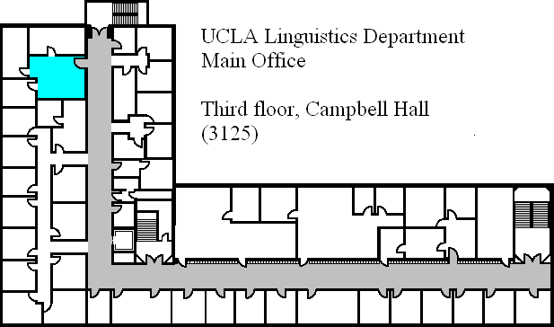

<div id="wrapper">

	<!-- Simple sidebar -->
	<div id="sidebar-wrapper">
		<ul class="sidebar-nav">
			<li class="sidebar-brand"><a href="/editUsers">Edit User list</a></li>
			<li ng-repeat="person in persons">
				<a href="javascript:;" ng-class="selectedClass(person)" ng-click="select(person)">{{person.name}}</a>
				<!--<button type="button" class="btn btn-default btn-sm" ng-click="showInfo()" ng-show="isSelected(person)">
				  <span class="glyphicon glyphicon-pencil"></span>
				</button>-->
			</li>
		</ul>
	</div>
			
	<!-- Page content -->
	<div id="page-content-wrapper">
		<div class="content-header">
			<h1>
				<a id="menu-toggle" href="javascript:;" class="btn btn-default"><i class="icon-reorder"></i></a>
				Office Map Web App
			</h1>
			<!--<modal-window></modal-window>-->
		</div>
		<!-- Keep all page content within the page-content inset div! -->
		<div class="page-content inset">
			<div class="row">
				<input type="number" name="xValue" ng-model="xValue" ng-change="changePosition()" ng-disabled="inputDisabled()">
				<input type="number" name="yValue" ng-model="yValue" ng-change="changePosition()" ng-disabled="inputDisabled()">
			</div>
			<div class="row">
				<span class="glyphicon glyphicon-map-marker"  
					ng-repeat="person in persons" ng-style="person.style" 
					ng-click="select(person)" ng-init="initPosition(person)"
					ng-class="selectedClass(person)" pointer-draggable></span>
				
			</div>
		</div>
	</div>
</div>